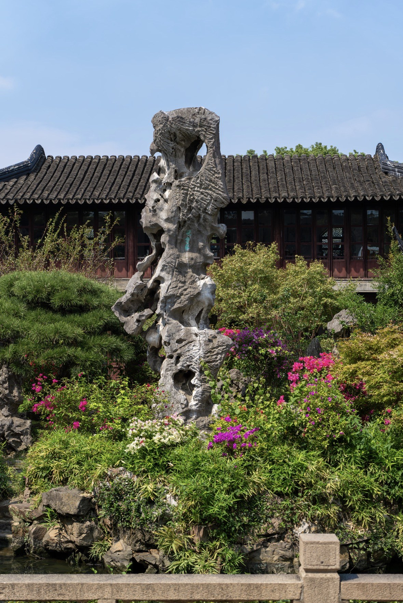

设 计 系 统 · DESIGN SYSTEM v1.0
咫 尺 乾 坤 · 设 计 规 范
第二周确立的视觉基因，在第五、六周扩展为可执行的系统：一条色彩链、一套字体层级、一组克制的圆角与阴影、一套 4px 间距模数，以及一套覆盖默认／悬停／点击／加载／空／错六态的组件库。
01
色 彩
以"宣纸—墨—朱砂—黛青—金"五色为骨架，暖色为底、冷色为信息、朱砂为唯一强行动色。
#F3EAD7
宣纸 Paper
#F3EAD7
页面底色／卡片次底
#E8DEC3
纸二
#E8DEC3
分区底／输入框
#DDD0AD
纸三
#DDD0AD
骨架屏／分隔块
#1A1410
墨 Ink
#1A1410
正文与主标题
#3D3329
淡墨
#3D3329
次级正文
#8A7D6A
浅墨
#8A7D6A
辅助信息
#B13A2F
朱砂
#B13A2F
主行动／强调
#872821
深朱砂
#872821
主按钮悬停
#2F5A6E
黛青
#2F5A6E
次行动／信息
#143442
深黛青
#143442
深色区块
#B58D4E
赭金
#B58D4E
点缀／说明
#5A6B3A
苔绿
#5A6B3A
成功态
用 色 规 则
- · 朱砂仅用于唯一主行动、当前态与关键数值，全屏占比不超过 8%
- · 黛青承担"次级行动 / 信息类"语义，与朱砂形成冷暖分工
- · 纸色三阶用于制造层次，不使用纯白与纯黑，避免破坏纸感
- · 正文与背景对比度 ≥ 7:1，辅助文字 ≥ 4.5:1
语 义 色
主行动信息
提示强调
默认
成功
失败
语义色只用于状态表达与辅助识别，不承担层级功能。
02
字 体 与 层 级
六款字体分工：书法用于标题与题跋，楷体用于正文与界面，西文衬线用于数字与拉丁文。
主标题 H1
Ma Shan Zheng · 100–148px
园名、页面主标。仅用于首屏，字距 0.06–0.10em
拙 政 园
章节标题 H2
Ma Shan Zheng · 24–36px
区块标题，与编号并排使用
园 之 一 眼
小标题 H3
ZCOOL XiaoWei · 16–23px
卡片标题、组件标题，识别度高不刺眼
远 香 堂 · 中 部 主 厅
正文 Body
ZCOOL QingKe HuangYou · 14–16px / 1.95
长文阅读，字重轻以减轻纸面压迫
园以水为脉，以廊为骨，以景为题，四百余年营建，四时不改其趣。
界面文字 UI
Noto Serif SC · 12–16px
按钮、标签、表单，字距 0.1–0.2em
入 园 移 步
题跋 Poem
Liu Jian Mao Cao · 21px
诗文题联、手写批注，保留书写感
四壁荷花三面柳
半潭秋水一亭凉
半潭秋水一亭凉
数字 Numeral
Cormorant Garamond · 24–46px
统计、年份、计数，强调与汉字基线对齐
1997
03
图 标
统一 24×24 网格、1.6–1.9 描边、圆头圆角；随文字色变化，悬停转朱砂。
搜索
收藏
分享
点赞
题咏
新增
筛选
足迹
行程
对比
展开
异常
04
圆 角 与 阴 影
小圆角贴合"纸与印章"质感；阴影极轻，主要靠描边与底色分层。
圆 角
2 / 4 / 8 / 14 / 999px
印章 2px · 输入 4px · 卡片 8px · 弹窗 14px · 药丸 999px
描 边
1px #D8C9A8
强描边 #BFAE8A 用于可点击容器
阴 影 一
0 1px 2px rgba(26,20,16,.06)
卡片常态，仅轻提离纸面
阴 影 二
0 6px 18px -6px rgba(26,20,16,.20)
悬停浮起
阴 影 三
0 18px 48px -12px rgba(26,20,16,.30)
弹窗、抽屉、浮条
05
间 距
4px 基准模数，页面留白随层级递增：卡片内 16–24px，区块间 48–96px，页面边距随断点 14–48px。
4
8
12
16
24
32
48
64
96
128
06
栅 格 与 断 点
桌面 12 栏，容器最大 1320px（≥1440px 时放宽至 1400px），栏距 32px。五档断点逐级降栏、堆叠、换位。
1440+
12 栏 · 容器 1400px
双栏 + 粘性侧栏
双栏 + 粘性侧栏
1200
12 栏 · 栏距 26px
卡片降为 2 列
卡片降为 2 列
1024
8 栏 · 栏距 22px
侧栏下沉、横向卡片收窄
侧栏下沉、横向卡片收窄
768
4 栏 · 栏距 16px
导航转抽屉、底部行动条
导航转抽屉、底部行动条
480
单栏 · 边距 14px
按钮与图标压缩
按钮与图标压缩
安 全 区
左右安全边距 clamp(16px, 4vw, 48px)，内容最大宽度 1320px 居中；超宽屏两侧留白加大而非拉伸行宽，保持每行 32–38 个汉字的最佳阅读长度。
重 排 逻 辑
先"换位"后"降列"再"堆叠"：双栏→单栏（1024）→卡片竖排（768）→导航入抽屉（768）。核心行动在移动端始终保留在底部行动条，不随滚动丢失。
07
可 复 用 组 件
十一类组件覆盖全部页面；每个组件均提供默认 / 悬停 / 点击 / 加载 / 禁用五态。
按钮 Button
主 / 次 / 幽灵 / 文字 / 链接，五级变体 · 三档尺寸 · 加载态内置
输入框 Input / 搜索 / 开关 / 滑块
表单类组件统一 4px 圆角与 1px 描边，聚焦时朱砂描边 + 3px 光晕
支持中英文与空格
未找到匹配的园林
开 关 Switch
滑 块 Range
标签 Tag / 胶囊 Chip / 分段 Seg / 标签页 Tabs
标签用于分类与元信息，胶囊用于可点选筛选，标签页用于同层内容切换
江 南 第 一文 人 写 意
以 水 为 骨世 界 文 化 遗 产
强 调
卡片 Card
三种形态：纵向图文卡 / 横向图文混排卡 / 纯文本卡；悬停统一浮起 6px 并放大图片

建 筑 集 锦留 园
建筑布局之巅，清代艺术集锦。
狮 子 林
以假山叠石著称，洞壑曲折，九狮峰为江南一绝。
折叠面板 Accordion / 模态 Modal / 抽屉 Drawer / 提示 Toast
折叠面板用于长信息降噪；模态用于需要中断的确认；抽屉用于移动端导航
御史王献臣辞官归田，于大弘寺旧址营建园林，聘文徵明参与设计。
联合国教科文组织列入《世界文化遗产名录》。
08
状 态 矩 阵
所有可交互元素必须覆盖六态；状态通过色彩、描边、位移与文案共同表达。
◻
默 认
常态，无额外装饰
◈
悬 停
描边转朱砂 + 浮起 2–6px
◉
点 击
缩放 0.96，回弹
◌
加 载
骨架屏 / 内嵌转圈 / 进度
∅
空 状 态
说明 + 一个主行动
✕
错 误
朱砂提示 + 重试